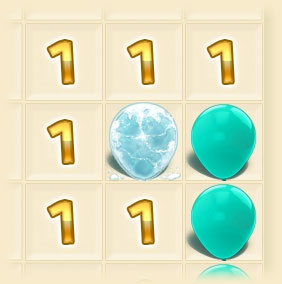

Set Difficulty: Easy | Medium | Hard | Extreme
Developed with Dart and StageXL
Source Code is on GitHub
Click on balloons to pop them.
A revealed number tells you how many bombs are next to that square.
The count includes squares above, below, left, right and diagonal.
One of these balloons is a bomb. Can you guess which one?
If you're certain a balloon is hiding a bomb, freeze it.
Freeze a balloon by shift- or right-clicking.
Every time you freeze a balloon, the bomb count goes down.
Unfreeze a balloon the same way: shift- or right-click.